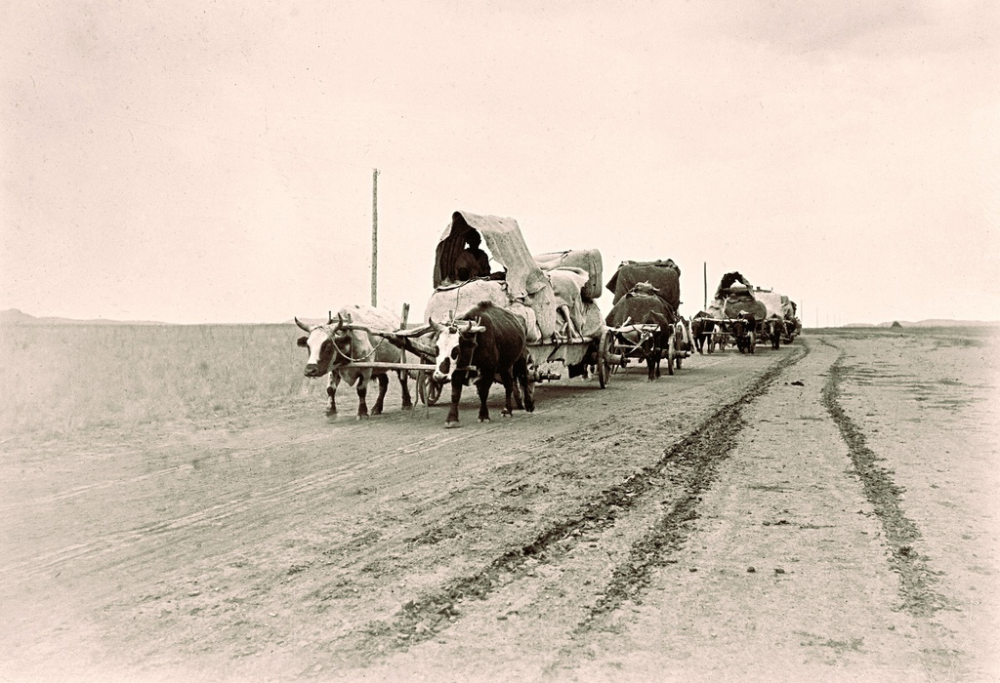
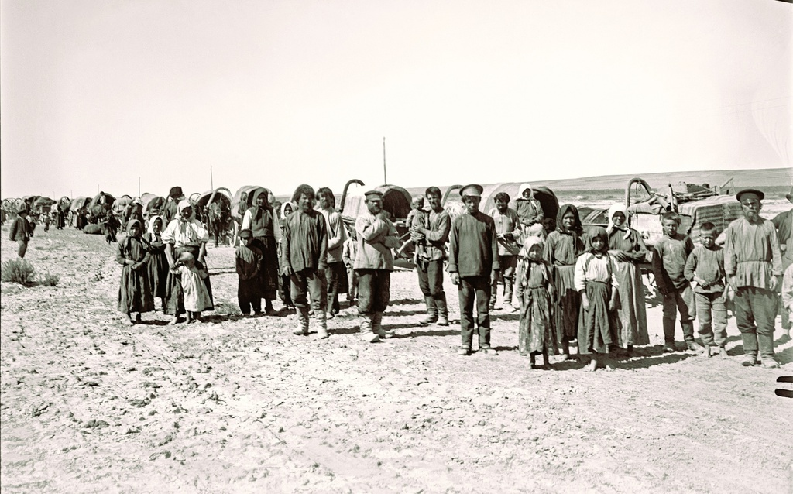
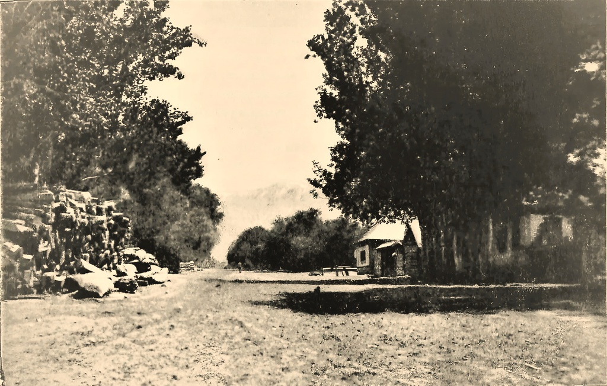

Справочник родов · станица Голубевская (Борохудзир)
Места исхода родов Голубевской
Откуда переселялись семьи, основавшие и населявшие станицу Голубевскую: крестьяне Богородской волости Томской губернии (переселения 1871 и 1876 годов), казаки Кокчетавского уезда (1880) и другие. Терракотовая точка - сама станица, тёмные точки - места исхода; клик по точке показывает роды.






- Муры, Богородская волость, Томский уезд и губ.
![]() карточка НП на Familio →роды: Алькины, Винокуровы (1871 г.), Грачевы (1876 г.), Димитриевы (1871 г.), Карповы (1871 г.), Кривцовы, Меньшовы (1871 г.), Овчинниковы, Пономаревы (1871 г.), Синицыны (1876 г.), Хохловы (1876 г.)
карточка НП на Familio →роды: Алькины, Винокуровы (1871 г.), Грачевы (1876 г.), Димитриевы (1871 г.), Карповы (1871 г.), Кривцовы, Меньшовы (1871 г.), Овчинниковы, Пономаревы (1871 г.), Синицыны (1876 г.), Хохловы (1876 г.)- Алькины: Метрическая книга Одигитриевской церкви села Богородского Томского уезда за 1863 год, ГАТО Ф.471 оп.1 д.1, цифровая плёнка DGS 7470281, кадр 00259, запись №44: 16 декабря умер, 18 погребён «деревни Муры крестьянин Михаил Васильев Алькин», 29 лет, от чахотки. <a href="https://www.familysearch.org/ark:/61903/1:1:65C9-RS49" target="_blank" rel="noopener">Запись</a>. В указателе он же с годом рождения 1834. В справочнике Голубевской единственный двор Алькиных, Фрол Михайлов Алькин, по отчеству это его сын: фамилия редкая, деревня та же. Лист получен 18.09.2026.
- Винокуровы: ЦГА РК Ф.44 оп.1 д.411166, дело №19 за 1870 год: в партии Овчинникова записан Макар Винокуров. Сопоставление метрических записей подтверждает, что это тот же Макар Фёдоров Винокуров, чья семья встречается в томских метриках до переселения и в ранних метриках Голубевской после него. В записи о смерти его двухлетнего сына Евдокима за 1863 год семья указана в деревне Муры (<a href="https://www.familysearch.org/ark:/61903/3:1:3QS7-L9Z6-8G57?view=index&personArk=%2Fark%3A%2F61903%2F1%3A1%3A65C9-FCM3&action=view&cc=4450389&lang=ru&groupId=M99K-LYT" target="_blank" rel="noopener">снимок 124 из 271</a>; прочитано по оригиналу). Муры подтверждены как место проживания семьи до переселения; точная дата и непосредственный пункт выезда не установлены.
- Грачевы: Приказ №246 от 30 декабря 1876 г. по Семиреченскому казачьему войску - о зачислении крестьян Томской губернии, Томского округа, Богородской волости в войсковое сословие с водворением при реке Борохудзир (ЦГА РК Ф.44 О.1 Д.4175)
- Димитриевы: 1871 Дело о перечислении в Семиреченскую область 121 крестьян Томской губернии
- Карповы: 1871 Дело о перечислении в Семиреченскую область 121 крестьян Томской губернии
- Кривцовы: ЦГАРК. Ф.39. Оп.1 Д.474; Метрическая книга 1859 г., запись №16 о рождении Акилины: ГАТО (Государственный архив Томской области), Ф.471 оп.1 д.1, Одигитриевская церковь села Богородского Томского уезда; микрофильм 2008752 item 8, цифровая плёнка DGS 7470281, кадр 00072 Выписка из ревизской сказки деревни Муринской, двор 162/26: Григорий Степанов Кривцов, 36 лет, жена второго брака Варвара Герасимова, 30 лет; сын от первой жены Степан, 13 лет, сын второй жены Прокопий, 5 лет; дочери от первой жены Катерина, 14 лет, от второй Степанида, 7,5 года, и Марина, 2 года; брат Григория Кузьма Степанов, 31 год. Это тот же двор, что в метрике 1859 года. Выписка получена 18.09.2026; архивный шифр требует уточнения.
- Меньшовы: 1871: дело о перечислении 121 крестьянина Томской губернии. Выписка из ревизской сказки деревни Муринской, двор 117/4: Дмитрий Филиппов Меньшов, его сын Тихон с женой Матроной Тимофеевой, брат Николай Филиппов. В метриках Голубевской с 1871 года совпадают Тихон Дмитриев Меньшов и Матрена Тимофеева; также встречаются Николай и Дмитрий Филипповы. Муры подтверждены как место проживания семьи до переселения; точная дата выезда требует отдельного документа. Ещё одно подтверждение деревни Муры: 21 декабря 1863 года умер годовалый Пётр, сын крестьянина деревни Муры Димитрия Наумова Меньшова (запись №46). Метрическая книга Одигитриевской церкви села Богородского Томского уезда, ГАТО Ф.471 оп.1 д.1, цифровая плёнка DGS 7470281, кадр 00259. Лист получен 18.09.2026.
- Овчинниковы: Метрическая книга Богородской волости Томского уезда, 1862 г., запись №7 о рождении Марии (ГАТО (Государственный архив Томской области), Ф.471 оп.1 д.1, Одигитриевская церковь села Богородского Томского уезда; микрофильм 2008752 item 8, цифровая плёнка DGS 7470281, кадр 00169 В каталоге плёнка подписана «Рождения 1859», а оцифровка охватывает 1855-1864 годы, поэтому точное дело за этот год уточняется.)
- Пономаревы: Дело о перечислении в Семиреченскую область крестьян Томской губернии («партия Овчинникова», 124 семейства), ЦГА РК Ф.44 оп.1 д.411166, дело №19 за 1870 год: в списке значится Пономарев Павел и Пономарев Иван. Связь с родом установлена по фамилии: имя главы в списке не совпадает с именами наших ранних дворов, родство не доказано. Метрика 1863 года подтверждает обоих людей из списка партии в деревне Муры: 5 августа у крестьянина деревни Муры Павла Александрова Пономарёва родилась дочь Евдокия (кадр 00110), а 20 декабря умерла годовалая Евдокия, дочь крестьянина деревни Муры Ивана Григорьева Пономарёва (кадр 00259, запись №32). Метрическая книга Одигитриевской церкви села Богородского Томского уезда, ГАТО Ф.471 оп.1 д.1, цифровая плёнка DGS 7470281. Листы получены 18.09.2026.
- Синицыны: Приказ №246 от 30 декабря 1876 г. по Семиреченскому казачьему войску - о зачислении крестьян Томской губернии, Томского округа, Богородской волости в войсковое сословие с водворением при реке Борохудзир (ЦГА РК Ф.44 О.1 Д.4175); Метрическая запись о рождении Иоанна 4 января 1857 г.: родители Евграф Матфеев Синицын и Феодосия Семенова; деревня Муры (прочитано по оригиналу; <a href="https://www.familysearch.org/ark:/61903/3:1:3QSQ-G9Z6-ZN13?view=index&personArk=%2Fark%3A%2F61903%2F1%3A1%3A65C9-GP68&action=view&cc=4450389&lang=ru" target="_blank" rel="noopener">снимок FamilySearch</a>).
- Хохловы: Приказ №246 от 30 декабря 1876 г. по Семиреченскому казачьему войску о зачислении крестьян Томской губернии, Томского округа, Богородской волости в войсковое сословие с водворением при реке Борохудзир (ЦГА РК Ф.44 Оп.1 Д.4175). Метрическая запись о венчании Моисея Иванова Хохлова и Анисьи Платоновой Бежецкой, 7 января 1862 г.; жених из деревни Муры, 25 лет, невесте 17 лет. Одигитриевская церковь села Богородского Томского уезда (ГАТО Ф.471 Оп.1 Д.1; DGS 007470281): <a href="https://www.familysearch.org/ark:/61903/1:1:65FG-XLLN" target="_blank" rel="noopener">Запись</a>, <a href="https://www.familysearch.org/ark:/61903/3:1:3QS7-L9Z6-8V73" target="_blank" rel="noopener">лист</a>. Метрическая запись о рождении Никиты Моисеева Хохлова, 13 сентября 1864 г.; родители Моисей Иванов Хохлов и Анисья Платонова. Одигитриевская церковь села Богородского Томского уезда (ГАТО Ф.471 Оп.1 Д.1; DGS 007470281): <a href="https://www.familysearch.org/ark:/61903/1:1:65FG-64Q3" target="_blank" rel="noopener">Запись</a>.
- Богородская волость, Томский уезд и губерния (на карте - примерно, уровень уезда)роды: Васильевы (1876 г.), Даниловы (1876 г.), Ерковы (1876 г.), Малочкины (1876 г.), Михайловы (1876 г.), Салтановы (1876 г.), Сосновы (1876 г.), Ступкины (1876 г.)
- Васильевы: Приказ №246 от 30 декабря 1876 г. по Семиреченскому казачьему войску - о зачислении крестьян Томской губернии, Томского округа, Богородской волости в войсковое сословие с водворением при реке Борохудзир (ЦГА РК Ф.44 О.1 Д.4175)
- Даниловы: Приказ №246 от 30 декабря 1876 г. по Семиреченскому казачьему войску - о зачислении крестьян Томской губернии, Томского округа, Богородской волости в войсковое сословие с водворением при реке Борохудзир (ЦГА РК Ф.44 О.1 Д.4175)
- Ерковы: Приказ №246 от 30 декабря 1876 г. по Семиреченскому казачьему войску - о зачислении крестьян Томской губернии, Томского округа, Богородской волости в войсковое сословие с водворением при реке Борохудзир (ЦГА РК Ф.44 О.1 Д.4175)
- Малочкины: Приказ №246 от 30 декабря 1876 г. по Семиреченскому казачьему войску - о зачислении крестьян Томской губернии, Томского округа, Богородской волости в войсковое сословие с водворением при реке Борохудзир (ЦГА РК Ф.44 О.1 Д.4175)
- Михайловы: Приказ №246 от 30 декабря 1876 г. по Семиреченскому казачьему войску - о зачислении крестьян Томской губернии, Томского округа, Богородской волости в войсковое сословие с водворением при реке Борохудзир (ЦГА РК Ф.44 О.1 Д.4175)
- Салтановы: Приказ №246 от 30 декабря 1876 г. по Семиреченскому казачьему войску - о зачислении крестьян Томской губернии, Томского округа, Богородской волости в войсковое сословие с водворением при реке Борохудзир (ЦГА РК Ф.44 О.1 Д.4175)
- Сосновы: Приказ №246 от 30 декабря 1876 г. по Семиреченскому казачьему войску - о зачислении крестьян Томской губернии, Томского округа, Богородской волости в войсковое сословие с водворением при реке Борохудзир (ЦГА РК Ф.44 О.1 Д.4175)
- Ступкины: Приказ №246 от 30 декабря 1876 г. по Семиреченскому казачьему войску - о зачислении крестьян Томской губернии, Томского округа, Богородской волости в войсковое сословие с водворением при реке Борохудзир (ЦГА РК Ф.44 О.1 Д.4175)
- Маркелово, Богородская волость, Томский уезд и губ. карточка НП на Familio →роды: Афанасьевы (1871 г.), Голубевы (1876 г.), Горкальцевы (1871 г.), Кондаковы, Куприяновы (1876 г.), Сосины (1876 г.), Фомины (1876 г.), Юрочкины (1876 г.)
- Афанасьевы: ЦГА РК Ф.44 оп.1 д.411166, дело №19 за 1870 год: в партии Овчинникова значатся Афонасьев Иван и Афонасьев Михаил. Вторая фамилия рода Афанасьевых - Наушкины. В метрической записи о рождении Иустины, дочери Михаила Афанасьева Наушкина и Елены Михайловой, от 1 октября 1867 года семья указана в деревне Маркелово. Источник: ГАТО ф.170 оп.9 д.942, Томский округ, 1867 год; FamilySearch DGS 007470007, <a href="https://www.familysearch.org/ark:/61903/3:1:3QS7-99Z6-CQ6M?view=index&personArk=%2Fark%3A%2F61903%2F1%3A1%3A6R87-NBF4&action=view&cc=4450389&lang=ru&groupId=M99K-KXR" target="_blank" rel="noopener">снимок 53 из 395</a>. В Голубевской та же супружеская пара: Михаил Афанасьев, он же Наушкин, и Елена Михайлова; в 1875 году у них родилась дочь Александра. Маркелово подтверждено как место проживания семьи непосредственно перед переселением; точная дата выезда отдельно не установлена.
- Голубевы: Приказ №246 от 30 декабря 1876 г. по Семиреченскому казачьему войску - о зачислении крестьян Томской губернии, Томского округа, Богородской волости в войсковое сословие с водворением при реке Борохудзир (ЦГА РК Ф.44 О.1 Д.4175) ТОЧНОЕ МЕСТО: деревня МАРКЕЛОВО. Рождение дочери Феоктисты 5 ноября 1866 года у «Якова Ефимова Голубьева» и «Надежды Мироновой»: <a href="https://www.familysearch.org/ark:/61903/1:1:65FG-PRBZ">Запись</a> , лист: <a href="https://www.familysearch.org/ark:/61903/3:1:3QSQ-G9Z6-ZQJM">Лист</a> . Деревню прочитал по листу Никита Нэйтан Харченберг 27.09.2026. Это наш двор: в Голубевской Иаков Евфимьев Голубев с женой Надеждой Мироновой, дети Мартин 1874 и Дарья 1877. Феоктисты в наших книгах нет, она родилась до переселения. Предположение, требует проверки: Анна Ефимова Голубьева, жена Бориса Афанасьева Фомина (венчание 1868 года в том же Маркелове), по отчеству может быть сестрой Якова Ефимова.
- Горкальцевы: Дело о переселении в Семиречье: в рукописном списке Иван, фамилия прочитана владельцем архива по оригиналу как «Горкольцовъ»; машинописный указатель «Гарковцев» ошибочен. Выписка из ревизской сказки деревни Мартеловой, двор 11/4: Наум Авилов Горковцов и брат Иван Авилов; у Ивана сыновья Дмитрий и Семен. В Голубевской по метрикам с 1872 года Дмитрий и Семен Иоанновы Горкольцевы. Семейная связка сильная, но оригинал ревизского двора 11/4 еще не проверен. Деревня Маркелова (Мартелова) приведена под №470 в <a href="https://elib.tomsk.ru/purl/1-13918/" target="_blank" rel="noopener">списке населенных мест Томской губернии (сведения 1859 года, издание 1868 года)</a>. Это устанавливает вариант названия, но не доказывает дату непосредственного выезда семьи из деревни.
- Куприяновы: Приказ №246 от 30 декабря 1876 г. по Семиреченскому казачьему войску - о зачислении крестьян Томской губернии, Томского округа, Богородской волости в войсковое сословие с водворением при реке Борохудзир (ЦГА РК Ф.44 О.1 Д.4175)
- Сосины: Приказ №246 от 30 декабря 1876 г. по Семиреченскому казачьему войску - о зачислении крестьян Томской губернии, Томского округа, Богородской волости в войсковое сословие с водворением при реке Борохудзир (ЦГА РК Ф.44 О.1 Д.4175) ТОЧНОЕ МЕСТО: деревня МАРКЕЛОВО. Рождение Луки, сына Петра Козмина Сосина, 18 октября 1863 года: <a href="https://www.familysearch.org/ark:/61903/1:1:65C9-84JZ">Запись</a> . Деревню прочитал по листу Никита Нэйтан Харченберг 27.09.2026. Это наш двор: в Голубевской Лука Петров Сосин ведёт хозяйство с 1881 года, а его отец Пётр Косьмин Сосин записан в приказе №246 с сыном «Лукіаномъ 14 лѣтъ», что сходится с рождением 1863 года.
- Фомины: Приказ №246 от 30 декабря 1876 г. по Семиреченскому казачьему войску - о зачислении крестьян Томской губернии, Томского округа, Богородской волости в войсковое сословие с водворением при реке Борохудзир (ЦГА РК Ф.44 О.1 Д.4175) ТОЧНОЕ МЕСТО: деревня МАРКЕЛОВО. Венчание 22 мая 1868 года: «Борис Афанасьев Фомин», 35 лет, и «Анна Ефимова Голубьева», 25 лет: <a href="https://www.familysearch.org/ark:/61903/1:1:65C9-DRP6">Запись</a> , лист: <a href="https://www.familysearch.org/ark:/61903/3:1:3QSQ-G9Z6-DGBK">Лист</a> (книга Терсалгайского прихода за 1868 год, цифровая плёнка DGS 007470007). Деревню прочитал по листу Никита Нэйтан Харченберг 27.09.2026. Это наш двор: в Голубевской Борис Афанасьев Фомин с женой Анной Евфимьевой, дети с 1876 года. Отсюда девичья фамилия жены: Голубьева.
- Юрочкины: Приказ №246 от 30 декабря 1876 г. по Семиреченскому казачьему войску - о зачислении крестьян Томской губернии, Томского округа, Богородской волости в войсковое сословие с водворением при реке Борохудзир (ЦГА РК Ф.44 О.1 Д.4175)
- Томская губерния (на карте не показано)роды: Алексеевы (1871 г.), Гавриловы (1871 г.), Ефимовы (1871 г.), Лазаревы (1871 г.), Назаровы (1871 г.), Петровы (1871 г.), Семеновы (1871 г.), Сомовы (1871 г.)
- Алексеевы: Дело о перечислении в Семиреченскую область крестьян Томской губернии («партия Овчинникова», 124 семейства), ЦГА РК Ф.44 оп.1 д.411166, дело №19 за 1870 год: в списке значится Алексеев Никита. Связь с родом установлена по фамилии: имя главы в списке не совпадает с именами наших ранних дворов, родство не доказано.
- Гавриловы: Дело о перечислении в Семиреченскую область крестьян Томской губернии («партия Овчинникова», 124 семейства), ЦГА РК Ф.44 оп.1 д.411166, дело №19 за 1870 год: в списке значится Гаврилов Никита и Гаврилов Федор. Связь с родом установлена по фамилии: имя главы в списке не совпадает с именами наших ранних дворов, родство не доказано.
- Ефимовы: Дело о перечислении в Семиреченскую область крестьян Томской губернии («партия Овчинникова», 124 семейства), ЦГА РК Ф.44 оп.1 д.411166, дело №19 за 1870 год: в списке значится Ефимов Сергей и Ефимов Филипп. Связь с родом установлена по фамилии: имя главы в списке не совпадает с именами наших ранних дворов, родство не доказано.
- Лазаревы: Дело о перечислении в Семиреченскую область крестьян Томской губернии («партия Овчинникова», 124 семейства), ЦГА РК Ф.44 оп.1 д.411166, дело №19 за 1870 год: в списке значится Лазарев Иван. Имя совпадает с нашим ранним двором Иоанна Лаврентьева Лазарева.
- Назаровы: Дело о перечислении в Семиреченскую область крестьян Томской губернии («партия Овчинникова», 124 семейства), ЦГА РК Ф.44 оп.1 д.411166, дело №19 за 1870 год: в списке значится Назаров Леонтий. Связь с родом установлена по фамилии: имя главы в списке не совпадает с именами наших ранних дворов, родство не доказано.
- Петровы: Дело о перечислении в Семиреченскую область крестьян Томской губернии («партия Овчинникова», 124 семейства), ЦГА РК Ф.44 оп.1 д.411166, дело №19 за 1870 год: в списке значится Петров Михаил. Связь с родом установлена по фамилии: имя главы в списке не совпадает с именами наших ранних дворов, родство не доказано.
- Семеновы: Дело о перечислении в Семиреченскую область крестьян Томской губернии («партия Овчинникова», 124 семейства), ЦГА РК Ф.44 оп.1 д.411166, дело №19 за 1870 год: в списке значится Семенов Василий. В станице с 1881 года двор Василия Самуилова Семёнова, с 1879 года двор его брата Иоанна Самуилова. Вторая версия наравне с приказом 1902 года по Арык-Балыку, та связь помечена как недоказанная.
- Семеновы: Приказ №122 от 20 июня 1902 г. по Семиреченскому казачьему войску - о перечислении казаков станицы Арык-Балыкской Сибирского войска в Семиреченское войско; списки семей опубликованы: Семиреченские Областные Ведомости №74 от 13.09.1902
- Сомовы: Дело о перечислении в Семиреченскую область крестьян Томской губернии («партия Овчинникова», 124 семейства), ЦГА РК Ф.44 оп.1 д.411166, дело №19 за 1870 год: в списке значится Сомов Матвей. Связь с родом установлена по фамилии: имя главы в списке не совпадает с именами наших ранних дворов, родство не доказано.
- Арык-Балык, Кокчетавский уезд карточка НП на Familio →роды: Головины (1902 г.), Литвиновы (1902 г.), Семеновы (1902 г.), Симаченко (1890 г.), Тихоненко (1902 г.)
- Головины: Приказ №122 от 20 июня 1902 г. по Семиреченскому казачьему войску - о перечислении казаков станицы Арык-Балыкской Сибирского войска в Семиреченское войско; списки семей опубликованы: Семиреченские Областные Ведомости №74 от 13.09.1902
- Литвиновы: Приказ №122 от 20 июня 1902 г. по Семиреченскому казачьему войску - о перечислении казаков станицы Арык-Балыкской Сибирского войска в Семиреченское войско; списки семей опубликованы: Семиреченские Областные Ведомости №74 от 13.09.1902
- Семеновы: Дело о перечислении в Семиреченскую область крестьян Томской губернии («партия Овчинникова», 124 семейства), ЦГА РК Ф.44 оп.1 д.411166, дело №19 за 1870 год: в списке значится Семенов Василий. В станице с 1881 года двор Василия Самуилова Семёнова, с 1879 года двор его брата Иоанна Самуилова. Вторая версия наравне с приказом 1902 года по Арык-Балыку, та связь помечена как недоказанная.
- Семеновы: Приказ №122 от 20 июня 1902 г. по Семиреченскому казачьему войску - о перечислении казаков станицы Арык-Балыкской Сибирского войска в Семиреченское войско; списки семей опубликованы: Семиреченские Областные Ведомости №74 от 13.09.1902
- Симаченко: 14-я партия переселенцев из Саратовской губернии
- Тихоненко: Приказ №122 от 20 июня 1902 г. по Семиреченскому казачьему войску - о перечислении казаков станицы Арык-Балыкской Сибирского войска в Семиреченское войско; списки семей опубликованы: Семиреченские Областные Ведомости №74 от 13.09.1902
- Селение Ефремовское, Черниговская волость, Акмолинский уезд, Акмолинская областьНаселённого пункта не существует. GPS: 50.550000, 71.366670. Карта 1946 года →. Есть точные координаты и историческая карта, но карточки Familio нет. Историческая сноска: «Село основали русские или украинцы на урочище которое казахи называли Урюксай. Этого села давным давно нет, но его остатки все еще можно увидеть на гугл картах. До 2018 года существовало село Майоровка в Нуринском районе, в гугл картах еще по старому названию находится. От него на юг к Шахтерскому идет дорога. Примерно посередине, в том месте где Нура ближе всего к дороге приближается, южнее мусульманского кладбища и была Ефремовка.» Источник: ivtur, форум ВГД.
- Кучий: Метрическая книга станицы Голубевской 1915 года (ГА обл. Жетысу, Ф.597 О.1доп Д.6), запись о рождении Евдокии 23.02.1914, отец Никита Стефанов Кучий
- Леванисовы: Метрическая книга станицы Голубевской 1915 года (ГА обл. Жетысу, Ф.597 О.1доп Д.6), запись о рождении Алексея 15.03.1915, отец Николай Матвеев Леванисов
- Ревякины: Метрическая книга станицы Голубевской 1917 года (ГА обл. Жетысу, Ф.597 О.1доп Д.21), л.76об-77, запись №16 о рождении Варвары
- Домашка, Бузулукский уезд, Самарская губ. карточка НП на Familio →роды: Ольховы (1880 г.), Твердохлебовы (1880 г.)
- Острогожский уезд, Петренко (на карте - примерно, уровень уезда)
- Болдыревы: В основном списке приказа №246 от 30.12.1876 отсутствуют. По Кауфману (очерк об основании станицы): сверх партии из Богородской волости «недостающие 30 семей были набраны из изъявивших желание крестьян». Болдыревы ехали из Острогожского уезда НАПРЯМУЮ, дорога заняла ~4 года (краевед Иван Данильченко, @IvanDanilchenko, группа Голубевской 11.04.2024)
- Елишенко: В основном списке приказа №246 от 30.12.1876 отсутствуют. По Кауфману (очерк об основании станицы): сверх партии из Богородской волости «недостающие 30 семей были набраны из изъявивших желание крестьян». Острогожские семьи (как Болдыревы) ехали из Острогожского уезда НАПРЯМУЮ, дорога заняла ~4 года (краевед Иван Данильченко, @IvanDanilchenko, группа Голубевской 11.04.2024)
- Село Верх-Чиковское, Екатерининская волость, Барнаульский уезд, Томская губерния (на карте не показано) карточка НП на Familio →роды: Ничупиенко (1915 г.), Панасюк (1917 г.)
- Ничупиенко: Метрическая книга станицы Голубевской 1915 года (ГА обл. Жетысу, Ф.597 О.1доп Д.6), запись о рождении Анны 25.01.1915 и о её смерти 21.05.1915, отец Василий Аврамов Ничупиенко
- Панасюк: Метрическая книга станицы Голубевской 1917 года (ГА обл. Жетысу, Ф.597 О.1доп Д.21), л.73об-74, запись №23 о рождении Максима
- Федораева Заимка, Богородская волость, Томский уездНаселённый пункт прекратил существование. GPS: 56.835451, 83.722863. Карта Томской области 1911 года →. Есть точные координаты и историческая карта, но карточки Familio нет.
- Барышовы: Дело о перечислении в Семиреченскую область крестьян Томской губернии («партия Овчинникова», 124 семейства), ЦГА РК Ф.44 оп.1 д.411166: в списке значатся Барышикин Семен Косьмин и Барышикин Петр Косьмин. Венчание Симеона Кузмина Барышихина и Евдокии Тимофеевой Чекутуевой 19 января 1853 года состоялось в Николаевской церкви села Бабарыкино (ГАТО Ф.170 оп.9 д.523; DGS 7469964, кадр 40; <a href="https://www.familysearch.org/ark:/61903/1:1:6R87-C9FY" target="_blank" rel="noopener">запись о венчании</a>). Бабарыкино только место венчания, не место жительства супругов. Евдокия происходила из села Монастырское (уточнено по брачной записи). В метрике о рождении сына Иоанна 1861 года Семен Кузмин Барышихин назван крестьянином деревни Федораева Заимка (ГАТО Ф.471 оп.1 д.1, запись №21; <a href="https://fundus.hartschenberg.de/golubevskaya/rody/metriki/1861_fs007470281_00145_baryshihin.jpg" target="_blank" rel="noopener">скан метрики 1861 года</a>). Это подтверждает проживание семьи в Федораевой Заимке в 1861 году, но не доказывает, что именно оттуда она выехала в Семиречье.
- Жарковы: Дело о перечислении в Семиреченскую область крестьян Томской губернии («партия Овчинникова», 124 семейства), ЦГА РК Ф.44 оп.1 д.411166, дело №19 за 1870 год: в списке значится Жарков Марк, Жарков Дмитрий, Жарков Степан. Имя совпадает: у нас есть двор Петра Маркова Жаркова, то есть сына Марка. ВЕНЧАНИЕ 13 февраля 1867 года: «Пётр Марков Жорков», 20 лет, и «Анна Ильина Сиянакова», 16 лет. Метрическая книга Одигитриевской церкви села Богородского Томского уезда, ГАТО Ф.471 оп.1 д.1, цифровая плёнка DGS 007470281. <a href="https://www.familysearch.org/ark:/61903/1:1:6R87-MSDR" target="_blank" rel="noopener">Запись</a>, <a href="https://www.familysearch.org/ark:/61903/3:1:3QS7-99Z6-CQ9W" target="_blank" rel="noopener">лист</a>. Место жительства прочитано по оригинальному листу: деревня Федораева Заимка, та же, что у Барышихиных. В томских книгах фамилия пишется Жорков, отчество Марков как Морков. Это наш двор: в Голубевской с 1874 года Пётр Марков Жарков с женой Анной Ильиной. Рядом в книге двор вероятного брата, Торасия Моркова Жоркова, 1839 года рождения, жена Анна Прокопьева Сайнакова.
- Акмолинск карточка НП на Familio →роды: Зинченко
- Зинченко: ЦГАРК. Ф.39. Оп.1 Д.474
- Аркадьева, Елгайская волость, Томский округ, Томская губерния (на карте не показано) карточка НП на Familio →роды: Константиновы (1871 г.)
- Константиновы: Дело о перечислении в Семиреченскую область крестьян Томской губернии («партия Овчинникова», 124 семейства), ЦГА РК Ф.44 оп.1 д.411166, дело №19 за 1870 год: в списке значится Константинов Аким. Опубликованный список глав семей Голубевской за 1876 год называет Акима Константинова Константинова, 21 года, из Томской губернии (<a href="https://genealogiya.kz/st-golubevskaja/" target="_blank" rel="noopener">публикация списка</a>). В метрической записи Голубевской о рождении Сигклитикии 20 октября 1878 г. отец записан как Яким Константинов Константинов, жена Акилина Диомидова. Совпадение полного имени связывает Акима с ранним двором рода. Метрическая запись, в которой семья Константиновых указана жителями деревни Аркадьевой Елгайской волости Томского округа Томской губернии (FamilySearch, коллекция 4450389, группа M99K-VYT, кадр 3QS7-L9Z6-MCXF): <a href="https://www.familysearch.org/ark:/61903/3:1:3QS7-L9Z6-MCXF?view=index&personArk=%2Fark%3A%2F61903%2F1%3A1%3A65H3-51ZL&action=view&cc=4450389&lang=ru&groupId=M99K-VYT" target="_blank" rel="noopener">лист</a>. Точное место исхода подтверждено по оригиналу.
- Графская волость и селение, Акмолинский уезд, Акмолинская область карточка НП на Familio →Населённый пункт существует: современное название — село Раевка, Шортандинский район, Акмолинская область. GPS: 51.6875, 70.8132.роды: Лаврентьевы (1915 г.)
- Лаврентьевы: Метрическая книга станицы Голубевской 1915 года (ГА обл. Жетысу, Ф.597 О.1доп Д.6), запись о смерти Параскевы 05.03.1915, 4 года, от кори, отец Матвей Феодоров Лаврентьев
- Зарайский уезд, Рязанская губерния (на карте - примерно, уровень уезда)роды: Добрынины
- Карасульская волость и село, Петропавловский уезд, Акмолинская область карточка НП на Familio →Населённый пункт существует: современное название — село Карасу, Карасуский район, Костанайская область. GPS: 52.6584, 65.4842.роды: Сопруновы (1915 г.)
- Сопруновы: Метрическая книга станицы Голубевской 1915 года (ГА обл. Жетысу, Ф.597 О.1доп Д.6), запись о рождении Николая 11.05.1915, отец Андрей Григорьев Сопрунов
- Малонарымский редут, Иртышская линия (между Усть-Каменогорском и Нарымом) карточка НП на Familio →роды: Веригины
- Метлякова (Маклякова, Максакова), Тобольская губерния карточка НП на Familio →роды: Комаровы
- Питерская волость и село, Моршанский уезд, Тамбовская губерния (на карте не показано) карточка НП на Familio →роды: Пятовы (1915 г.)
- Пятовы: Метрическая книга станицы Голубевской 1915 года (ГА обл. Жетысу, Ф.597 О.1доп Д.6), запись о рождении Василисы 08.01.1915 и о её смерти 17.05.1915, отец Алексей Тимофеев Пятов
- Посёлок Полтавский, Полтавская волость, Петропавловский уезд, Акмолинская область карточка НП на Familio →Населённый пункт существует: современное название — село Полтавка, Аккайынский район, Северо-Казахстанская область. GPS: 54.5021, 69.7818.роды: Слепченко (1915 г.)
- Слепченко: Метрическая книга станицы Голубевской 1915 года (ГА обл. Жетысу, Ф.597 О.1доп Д.6), запись о рождении Михаила 06.11.1915, отец Евфимий Иванов Слепченко; Метрическая книга станицы Голубевской 1916 года (ГА обл. Жетысу, Ф.597 О.1доп Д.15), запись о смерти сына Михаила 20.07.1916
- Рождественское село, Рождественская волость, Канский уезд, Енисейская губерния карточка НП на Familio →Населённый пункт существует: современное название — село Дзержинское, Красноярский край. GPS: 56.838005, 95.221390. Историческая сноска: «Историческая цепочка названий: Самойлова Заимка — Христорождественское — Рождественское — Дзержинское. В списке населённых мест Енисейской губернии 1911 года оно записано как Рождественское (Христорождественское), центр Рождественской (Христорождественской) волости; в конце 1930 — начале 1931 года село переименовано в Дзержинское.» Источник: Государственная универсальная научная библиотека Красноярского края.роды: Полянские (1917 г.)
- Полянские: Метрическая книга станицы Голубевской 1917 года (ГА обл. Жетысу, Ф.597 О.1доп Д.21), л.68об-69, запись №14 о рождении Феодора
- Селение Максимовское, Балкотинская волость, Кокчетавский уезд, Акмолинская область (на карте не показано) карточка НП на Familio →роды: Боловневы (1915 г.)
- Боловневы: Метрическая книга станицы Голубевской 1916 года (ГА обл. Жетысу, Ф.597 О.1доп Д.15), запись о рождении Иоанна 29.02.1916, отец Иоанн Матвеев Боловнев
- Село Вознесенское, Копальский уезд карточка НП на Familio →Населённый пункт прекратил существование; современное название не установлено. GPS: 44.8024605, 78.9597333.роды: Гвоздевы (1917 г.)
- Гвоздевы: Метрическая книга станицы Голубевской 1917 года (ГА обл. Жетысу, Ф.597 О.1доп Д.21), л.70об-71 (восприемник) и запись №49 о рождении Анастасии
- Село Кулишовка, Ростовский уезд, Донская область (на карте не показано) карточка НП на Familio →роды: Гусевы (1917 г.)
- Гусевы: Метрическая книга станицы Голубевской 1917 года (ГА обл. Жетысу, Ф.597 О.1доп Д.21), л.90об-91, запись №3 о смерти младенца Никифора
- Село Луговое, Копальский уезд карточка НП на Familio →Населённый пункт существует: современное название — село Терысаккан, Кербулакский район, область Жетысу. GPS: 44.5374981, 78.8839167.роды: Демченко (1917 г.)
- Демченко: Метрическая книга станицы Голубевской 1917 года (ГА обл. Жетысу, Ф.597 О.1доп Д.21), запись о рождении Михаила
- Семипалатинск (на карте не показано) карточка НП на Familio →роды: Череповские (1917 г.)
- Череповские: Метрическая книга станицы Голубевской 1917 года (ГА обл. Жетысу, Ф.597 О.1доп Д.21), л.75об-76, запись №14 о рождении Анны
- Станица Пресновская, Кокчетавский уезд, Акмолинская область (на карте не показано) карточка НП на Familio →роды: Ивановы (1915 г.)
- Ивановы: Метрическая книга станицы Голубевской 1915 года (ГА обл. Жетысу, Ф.597 О.1доп Д.6), запись о рождении Николая 02.02.1914, отец казак Иоанн Герасимов Иванов
- Тобольская губерния (на карте - примерно, уровень уезда)роды: Русаковы (1874 г.)
- Русаковы: «Публикации Семиреченского областного правления», отпечатано в г. Верном 21 декабря 1874 г., стр. 199: в казачье поселение Подгорное (на Чунджи) зачислен из крестьян Тобольской губернии Ефим Русаков. Род пришёл в Семиречье крестьянским, в казачье сословие переведён уже на месте.
- Тобольская губерния, Ялуторовский уезд, Таповая и Выползовая (на карте - примерно, уровень уезда) карточка НП на Familio → Выползовая на Familio →роды: Тютявины
- Тютявины: РС 1841 года (указан как Кузьма Никитин)
- Усть-Каменогорск, Семипалатинская область (на карте не показано) карточка НП на Familio →роды: Андреевы (1917 г.)
- Андреевы: Метрическая книга станицы Голубевской 1917 года (ГА обл. Жетысу, Ф.597 О.1доп Д.21), л.64об-65, запись №3 о рождении Михаила
- Ушаковское, Катайский муниципальный район, Курганская область карточка НП на Familio →роды: Мотовиловы
- Мотовиловы: Openwiki
- Федораевка, Томский округ, Томская губерния карточка НП на Familio →Населённый пункт существует: село Федораевка, Шегарский муниципальный район, Томская область. GPS: 56.8682, 83.7042.роды: Лескины (1871 г.)
- Лескины: Метрическая запись о браке Никиты Васильева Лескина и Марьи Васильевой: 22 января 1860 года, запись №8, ГАТО Ф.471 оп.1 д.1, DGS 007470281, кадр 00159. Метрическая запись о рождении Агриппины Лескиной: родилась 21 мая, крещена 24 мая 1861 года, запись №13, ГАТО Ф.471 оп.1 д.1, DGS 007470281, кадр 00175. Место исхода рода: Федораевка.
- Хрущеватское село, Старомилова волость, Воронежская губерния карточка НП на Familio →В записи 1917 года: «село Хрущеватка»; нормативные формы — Хрещатая, Хрищатая. Современное название — село Хрещатое, Калачеевский район, Воронежская область. Населённый пункт существует. GPS: 50.358017, 40.707817.роды: Труфановы (1917 г.)
- Труфановы: Метрическая книга станицы Голубевской 1917 года (ГА обл. Жетысу, Ф.597 О.1доп Д.21), л.70об-71, запись №6 о рождении Агрипины
- Чернокурьинская волость, Барнаульский уезд, Томская губерния (на карте не показано)роды: Еремченко (1915 г.)
- Еремченко: Метрическая книга станицы Голубевской 1916 года (ГА обл. Жетысу, Ф.597 О.1доп Д.15), запись о рождении Феодора 19.09.1916, отец Стефан Андреев Еремченко
- хутор Балабанский, станицы Потемкинской, 2-го Донского округа, Области Войска Донского (на карте не показано) карточка НП на Familio →роды: Гиенко (1902? г.)
- Гиенко: Память народа
Полная таблица: «Борохудзир - генеалогическая реконструкция» (доступ после простой регистрации). Данные - семейная таблица переселений и приказы о переселении крестьян Томской губернии
(30.12.1876) и «Дело о перечислении в Семиреченскую область 121 крестьян Томской губернии»
(1871). Если вы знаете место исхода рода, которого здесь нет -
напишите генеалогу-исследователю.